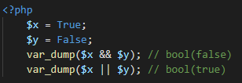

Dentre os operadores básicos de aritmética temos: soma, subtração, multiplicação, divisão, módulo (resto da divisão) e potenciação.
O operador básico da atribuição é o sinal “=”. Um erro comum é identificar o sinal de atribuição como “igual”. Na atribuição, dizemos que o operando da esquerda recebe o valor da expressão da direita.
Também podemos combinar alguns operadores combinados:
O operador de string é chamado de concatenação e definido por . (ponto):
Também conseguimos utilizar a combinação de operadores:
Utilizamos && (and) quando precisamos que as duas expressões sejam verdadeiras e || (or) quando pelo menos uma das expressões precisa ser verdadeira:
Nos permite comparar dois valores. Exemplo:
Definidos por ++ (incremento) e — (decremento), eles são responsáveis em incrementar e decrementar 1 no valor de uma variável.
Quando utilizado antes, ++$x ou –$x, o processamento do incremento/decremento acontece antes do valor da variável ser lida.
Aplicando o operador depois, $x++ ou $x–, o valor da variável é lida e então acontece o incremento/decremento.